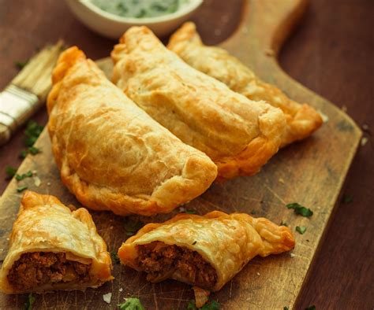
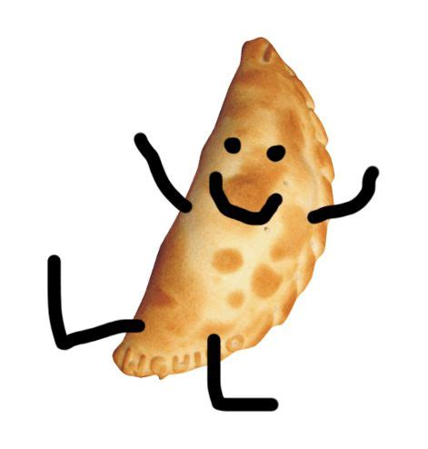

Empanada Puntana

Ingredientes para las tapas
- 1kg. de harina común
- 2 huevos
- 400cc de agua
- un poco de sal
Ingredientes para el relleno
- 1kg. de carne molida
- 1/4 de cebolla
- 1/4 de ají
- 4 huevos duros
- 100grs. de aceitunas
- Cantidad necesaria de grasa de cerdo
- sal, ají picante, oregano, pimienta
Elaboración de las tapas
- Mezclar la harina con la salmuera (agua y sal mezcladas) y cuando ésta pierde calor,agregar el huevo.
- Sobar bien hasta que quede una masa tierna, blandita. Hacer rollos y estirar discos que den empanadas de unos 10cm en su parte más larga.
Elaboracion del relleno
- Por otra parte, preparar el picadillo. La empanada puntana hace prevalecer el gusto de la carne por sobre cualquier otro. La carne que se utiliza, matambre, es picada a máquina.
- Picar bien la cebolla y el ají y poner a cocinar junto con la carne picada. Dejar cocinar en abundante grasa de cerdo y si el picadillo resultara algo líquido agregar un poco de harina para espesar el relleno.
- Dejar hervir hasta su cocción y condimentar a gusto.
- Dejar enfriar el relleno
Elaboración de las empanadas
- Proceder a rellenar los discos de empanada que ya se habrán estirado uno a uno.
- Colocar el picadillo en cada tapa y se les agrega el huevo duro y las aceitunas.
- Hecho el repulgue, se fríe o se hornea, según el gusto de cada uno.

Volver